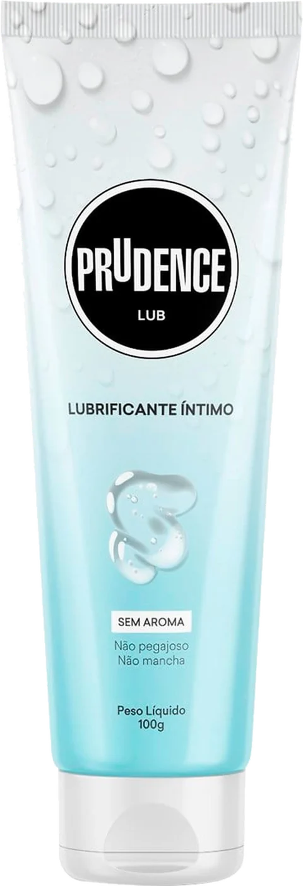

Sobre o produto
Prudence Lub
Lubrificante íntimo, 100 g. Tudo que está aqui vem escrito no tubo.

- Sem
aroma - Não
pegajoso - Não
mancha - Lubrificante
íntimo - 100 g
Ficha técnica
O que tem dentro
- Fabricante
- DKT do Brasil
- Conteúdo
- 100 g
- Base
- Água
- Aspecto
- Gel transparente e incolor
- Aroma e sabor
- Não tem
- Compatibilidade
- Preservativos de látex — a base de água não danifica a barreira
- Remoção
- Solúvel em água; não deixa mancha em pele ou tecido
- Uso
- Tópico, externo. Produto para pessoas adultas
- Conservação
- Entre 15 °C e 30 °C, longe de luz e umidade, fora do alcance de crianças
- Composição
- Propilenoglicol, glicerina, hidroxietilcelulose, benzoato de sódio, polissorbato 20, EDTA dissódico, ácido lático e água deionizada.
Dados reunidos a partir do rótulo do produto e de fichas publicadas por farmácias e distribuidores. Confira sempre a embalagem — a fórmula pode variar entre lotes e versões.
Onde comprar
Encontre perto de você
O Lub está em farmácias, supermercados e sex shops. Use sua localização para abrir o mapa com as lojas mais próximas.
Sua localização é usada só para montar a busca no mapa, no seu próprio navegador. Ela não é enviada para nós nem guardada em lugar nenhum.
Já teve um caso de atrito?
Contar a minha história